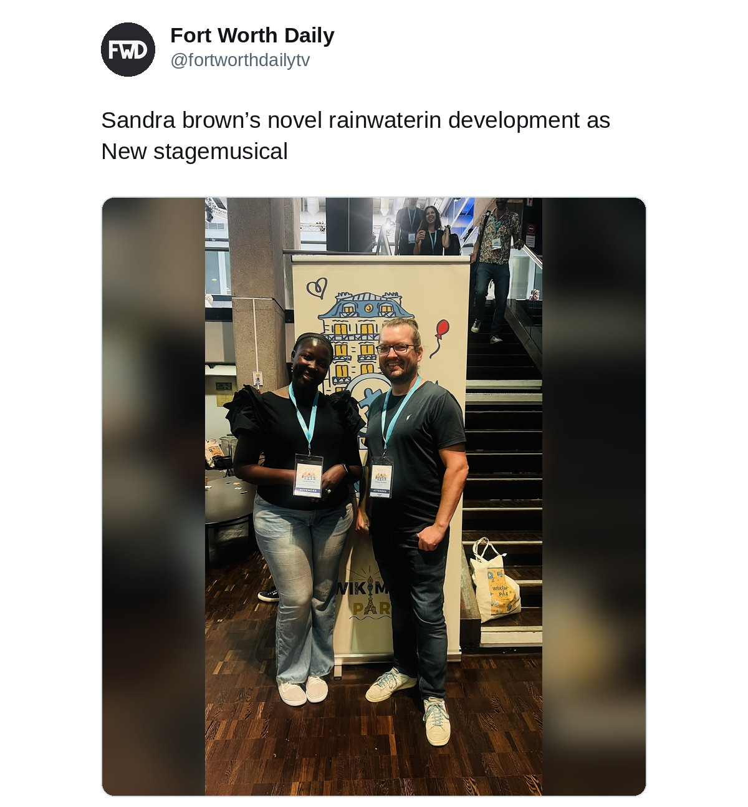

Feast Week sends No. 15 TCU to the Florida gulf coast, as the Horned Frogs will play two games in the Elevance Health Fort Myers Tip-Off.
👍 ❤️ 😮 ✅ written to disk (dry run)
story + scoring
{
"source": "TCU Athletics (women's basketball)",
"kind": "rss",
"score": 0.6963,
"relevance": 3,
"url": "https://gofrogs.com/news/2026/11/25/womens-basketball-preview-fort-myers-tip-off",
"image_license": "card",
"image_credit": "Card: FWD"
}The production is being developed by Pocket Watch Theatrical with music by Brian Feinstein and lyrics by Amanda Yesnowitz.

👍 ❤️ 😮 ✅ written to disk (dry run)
story + scoring
{
"source": "Fort Worth Business Press",
"kind": "rss",
"score": 0.4142,
"relevance": 1,
"url": "https://fortworthbusiness.com/culture/sandra-browns-novel-rainwaterin-development-as-new-stagemusical/",
"image_license": "wikimedia-cc",
"image_credit": "Photo: Sandra Aceng via Wikimedia Commons (CC BY-SA 4.0)"
}Congress is considering a $130 annual fee for fully electric vehicles, which would be in addition to the current Texas-required $200 a year registration fee.
👍 ❤️ 😮 ✅ written to disk (dry run)
story + scoring
{
"source": "KENS 5 San Antonio",
"kind": "rss",
"score": 0.1664,
"relevance": 2,
"url": "https://www.kens5.com/article/news/community/transportation/proposed-federal-fee-could-drive-up-registration-costs-for-texas-electric-vehicle-owners/273-0a357e5b-57dc-4094-a483-0d0863440a31",
"image_license": "wikimedia-cc",
"image_credit": "Photo: Oleg Yunakov via Wikimedia Commons (CC BY-SA 4.0)"
}